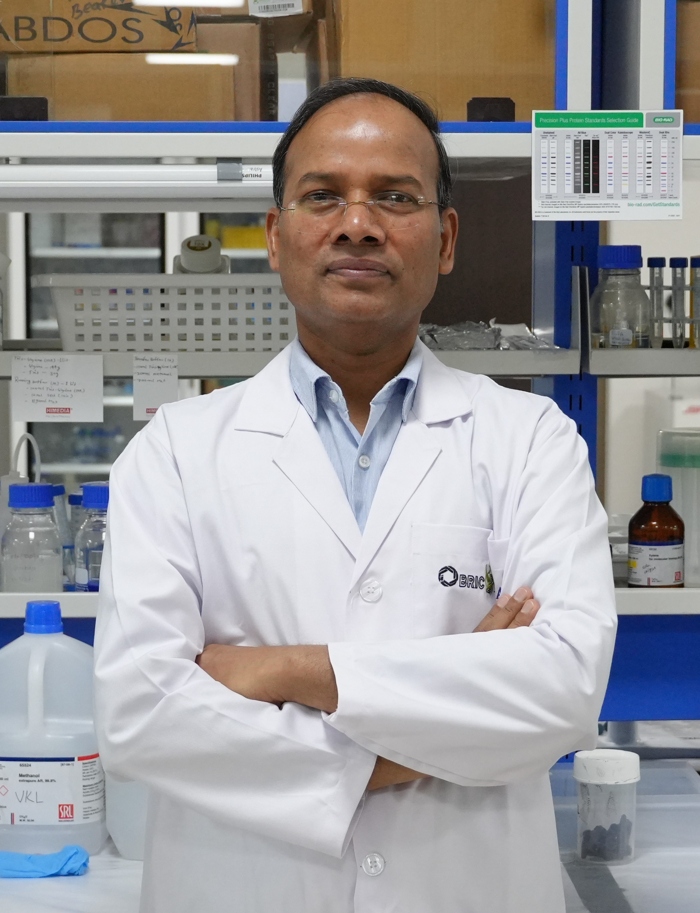

About Us
Organoid & Materials Interface Laboratory (VKL Lab)
National Institute of Animal Biotechnology (NIAB), Hyderabad, India
Pioneering Organoid Engineering and Biomaterial Interfaces for Advanced Disease Modeling.
At the VKL Lab within the National Institute of Animal Biotechnology (NIAB), our primary mission is to engineer 3D organoid model systems that faithfully replicate complex tissue architecture and physiology. By harnessing the power of stem cell biology, we develop robust organoids (including pancreatic, cardiac, and pulmonary models) to deeply investigate tissue development, host-pathogen interactions, and the underlying mechanisms of devastating diseases.
We uniquely integrate these organoid cultures with state-of-the-art bio-interfaces, utilizing novel nano-biomaterials and microfluidic technologies (BioMEMS/Organ-on-a-Chip). This multidisciplinary approach allows us to establish highly predictive, patient- and species-specific models. Ultimately, our engineered platforms accelerate the discovery of targeted therapeutics and bridge the gap between in vitro assays and clinical translation.
Dr. Vinod Kumar Scientist & Principal Investigator
Dr. Vinod Kumar is an interdisciplinary researcher with a diverse research background. Dr. Kumar received his Doctorate degree (2014) from the Banaras Hindu University, Varanasi, India, in the engineering of advanced carbon nanostructures for various biomedical applications. Thereafter, he underwent his first postdoctoral training (2014-2016) at the Institute of Nano Science & Technology and developed expertise in nano-bio-analytical systems/devices for early-stage screening of cardiac disease biomarkers.
Subsequently, he moved to Ben-Gurion University of the Negev, Israel, where he continued expanding his skills in advanced analytical domains (e.g. nanopores, nanofluidics). During his tenure at Ben-Gurion University of the Negev (2016-2019), he trained in the fabrication and bio-functionalization of nanopores toward improved analytical outcomes for small molecules and for error-resistant nucleic acid/peptide sequencing.
Following his return to India (2020) as a senior researcher at the Sanjay Gandhi Postgraduate Institute of Medical Sciences in Lucknow, he began investigating the role of nanomaterials in stem cell engineering, aiming to develop a pancreatic organoid model for understanding the pathophysiology of environmental diabetogens in Type 2 diabetes, while also designing biopolymer-based edible scaffolds for alternative protein sources.
